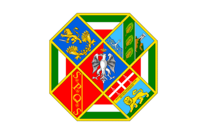

Benvenuto nell'HOMEPAGE della REGIONE LAZIO !

Il Lazio è una regione dell'Italia centrale affacciata sul Mar Tirreno. Il suo capoluogo, Roma,
è capitale d'Italia ed è stato il cuore dell'antico Impero romano. Tra i suoi monumenti iconici si annovera il Colosseo, un anfiteatro che poteva ospitare migliaia di spettatori.
Sulla costa, l'antico porto di Ostia conserva ancora raffinati mosaici e un teatro. Nell'entroterra si trovano le boscose montagne degli Appennini, con riserve naturali,
laghi e paesini in pietra.
Il Lazio è una regione dell'Italia centrale affacciata sul Mar Tirreno. Il suo capoluogo, Roma, è capitale d'Italia ed è stato il cuore dell'antico
Impero romano. Tra i suoi monumenti iconici si annovera il Colosseo, un anfiteatro che poteva ospitare migliaia di spettatori. Sulla costa, l'antico porto di
Ostia conserva ancora raffinati mosaici e un teatro. Nell'entroterra si trovano le boscose montagne degli Appennini, con riserve naturali, laghi e paesini in pietra.
Comune di ROMA CAPITALE
Comune di VITERBO
Comune di FROSINONE